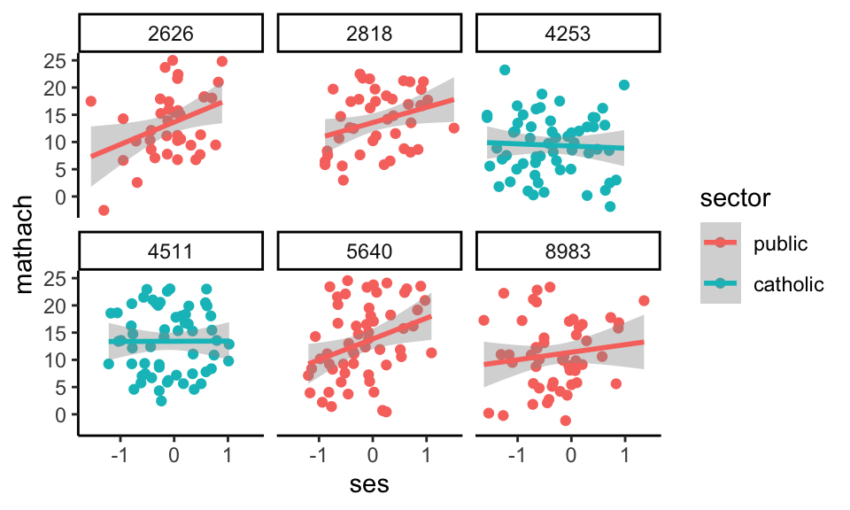
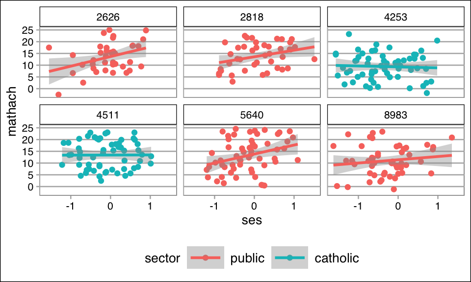

This chapter demonstrates some powerful features of ggplot2, the plotting package that we use most in this course.
ggplot can initially seem like a nightmare to some, but once you wrestle it to the ground it is one of the most powerful visualization tools you might have in your toolbox. Happily, it is fairly easy to get some basics up and running once you start looking at the world the way it does. Let’s start doing that.
First, ggplot thinks of a plot as a collection of layers stacked on top of each other. The way this looks in code is a bunch of weird function calls connected together with +. You read this series of calls left to right. The first call is always a statement saying what data you are plotting and what variables you care about. So before you can even plot, you need to make sure your data are in a nice, tidy data frame.
Happily, when you load data, it usually is. For example:
The easiest full plot to make has two elements. The first gives what your variables are, and the second says how to plot them:
ggplot(dat, aes(y = mathach, x = ses)) +geom_point( cex=0.5)
So far, nothing too scary, right? The ggplot( dat, aes(x=mathach, y=ses) ) says “My plot is going to use dat for my data, and my \(y\)-axis is the mathach variable and my \(x\)-axis is ses.” The aes() bit is “aesthetics”–it is a way of tying variables to different kinds of things you could have on your plot: x location, y location, color, plotting symbol, and a few other things.
For example:
dat <- dat |>mutate(sector =factor(sector, levels=c(0,1), labels=c("public","catholic")),minority =factor(minority, labels=c("non-minority","minority")))ggplot( dat, aes(y=mathach, x=ses, col=sector, pch=minority) ) +geom_point()
Note that ggplot wants the data frame to be neatly put together, including that categorical variables are listed as factors. This is why we convert the dummy sector to a factor above. Once you do this, however, it will label things in a nice way.
8.1 Summarizing
You can also automatically add various statistical summaries, such as simple regression lines:
Here we also added some uncertainty bars around the regression lines by not saying se = FALSE. (Including uncertainty is the default; this uncertainty is not to be trusted, especially in this course, as it is not taking clustering into account.)
8.2 Grouping
Combining these ideas we can make a trend line for each school:
The trendlines automatically extend to the limits of the data they are run on, hence the different lengths.
Also, notice we “saved” the plot in the variable my.plot. Only when we “print” the plot will the plot appear on your display. When we type the name of a variable, it prints. Once you have a plot stored in a variable you can augment it very easily.
As you may now realize, ggplot2 is very, very powerful.
8.3 Customization
We next show some other things you can do. For example, you can make lots of little plots:
my.plot +facet_grid( ~ female ) +ggtitle("School-level trend lines for their male and female students") +labs(x="SES",y="Math Achievement")
Or,
# random subset of schoolidsch <-sample( unique( dat$schoolid ), 6 )# pipe into ggplot sch.six <- dat |>filter(schoolid %in% sch)my.six.plot <-ggplot( sch.six, aes(y=mathach, x=ses, col=sector ) ) +facet_wrap( ~ schoolid, ncol=3 ) +geom_point() +stat_smooth( method="lm" )my.six.plot

Also shown in the above are adding titles.
8.4 Themes
You can very quickly change the entire presentation of your plot using themes. There are pre-packaged ones, and you can make your own that you use over and over. Here we set up a theme to be used moving forward
Compare the same plot from above, now with a new theme.
my.six.plot

Cool, no?
8.5 Next steps
There is a lot of information out there on ggplot and my best advice is to find code examples, and then modify them as needed. There are tutorials and blogs that walk through building plots (search for “ggplot tutorial” for example), but seeing examples seems to be the best way to learn the stuff. For example, you could use the above code for your project one quite readily. And don’t be afraid to ask how to modify plots on Piazza!